I bridge the gap between business strategy and technical delivery — working across Product, Analysis and Consulting disciplines to turn complex problems into clear, actionable outcomes. With a career spanning global consulting and in-house roles across Financial Services, Legal, SaaS and Energy, I am now focused on driving AI and Digital Transformation.
See the tools ↓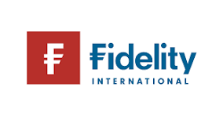
Fidelity International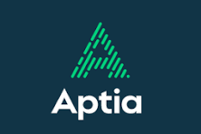
Aptia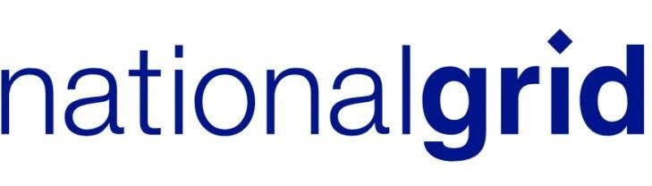
National Grid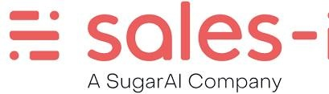
Sales-iThe combination of domain depth, delivery experience, and AI literacy that makes these tools genuinely useful — not just technically interesting.
Product ownership, backlog management, user story writing, stakeholder management and full SDLC delivery.
Big 4 background (KPMG). Programme delivery, workshop facilitation and senior/C-Suite stakeholder engagement.
BRD/FRD authoring, requirements elicitation, MoSCoW prioritisation, gap analysis, process re-engineering and workshop facilitation.
Pensions, Wealth and Asset Management, capital markets, insurance, underwriting and audit. FCA/PRA regulatory context across FS transformation programmes.
Prompt engineering, AI-assisted delivery, workflow automation and building AI tools that solve real consulting problems.
Identifying root causes, not just symptoms. Structured analysis, gap identification and turning ambiguous problems into clear delivery plans.
HCD methodology from KPMG applied to every tool and deliverable — intuitive for colleagues and clients, not just the person who built it.
FS, Legal, SaaS, Energy and Construction delivery experience — bringing pattern recognition across sectors that specialists in one domain don't have.
I wanted to go beyond using AI and actually build with it — to deeply understand how LLMs work and how to apply that to real consulting problems. This is my learning made tangible.
Existing tools have too many features I don't need and miss the things I do — like going straight from a meeting transcript to a structured process map. These are purpose-built for my specific workflows.
Without budget for premium AI tools, I built my own — and in doing so, created something more tailored and efficient than the off-the-shelf alternatives I couldn't access anyway.
A key part of my role is upskilling colleagues. Building visible, usable tools is the most effective way to demonstrate what AI-assisted delivery looks like in practice — and inspire others to build too.
Each tool started as a real frustration in client delivery. Here's the problem, the thinking, and what it does.
From raw meeting transcript to client-ready process map — in minutes, not days. Designed to replace manual Visio and Miro sessions and work live inside client workshops.
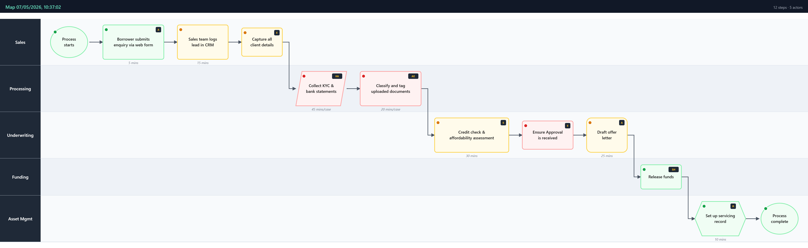
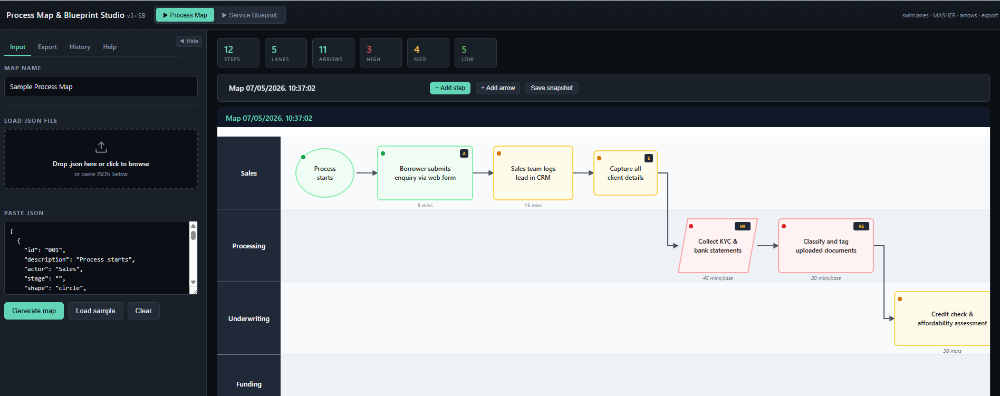
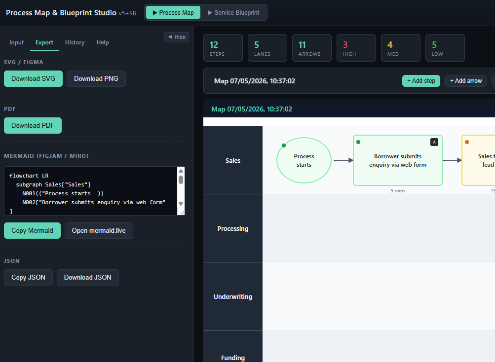
As a BA and Product Manager, process mapping is constant — and painfully manual. Every engagement means hours translating workshop notes into Visio or Miro diagrams, then scheduling a second session to review with the client. A two-step process that should be one.
Workshops transformed. I now produce a draft AS-IS process map live, inside the client session, as the conversation unfolds. Clients see it rendered in real time, give feedback immediately, and we finalise in one session — not two. What used to take a full day of post-workshop effort now takes minutes.
End-to-end service design across every layer of an organisation — built for C-Suite conversations where the detail matters, but so does the bigger picture.
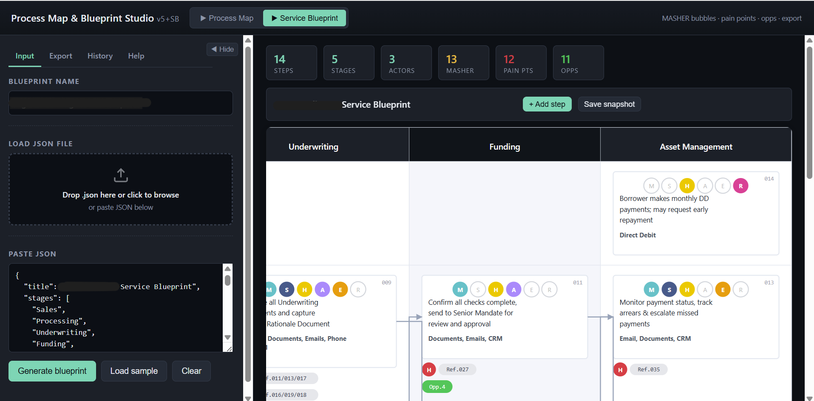
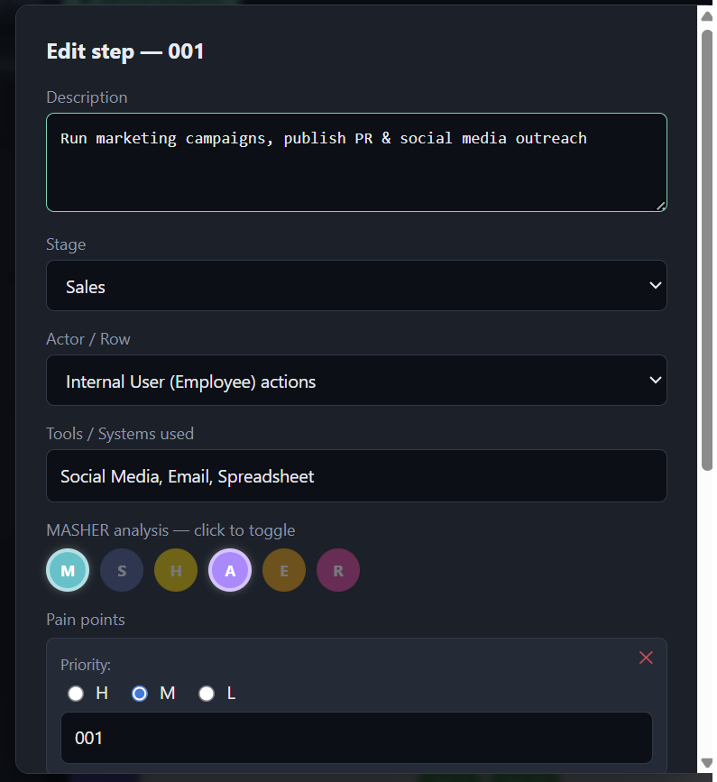
Detailed process maps are essential for BA work — but C-Suite stakeholders need the end-to-end picture, with pain points, automation opportunities and system constraints visible at a glance. Producing that level of analysis traditionally means hours of additional work after the workshop.
Particularly valuable in regulated Financial Services environments where C-Suite stakeholders need operational visibility without the granular process detail. Bridges the gap between BA-level mapping and executive-level communication — in one tool, one session.
A living, searchable library of AI best practices — built to capture and grow everything a team learns from an internal AI upskilling programme I designed and run.
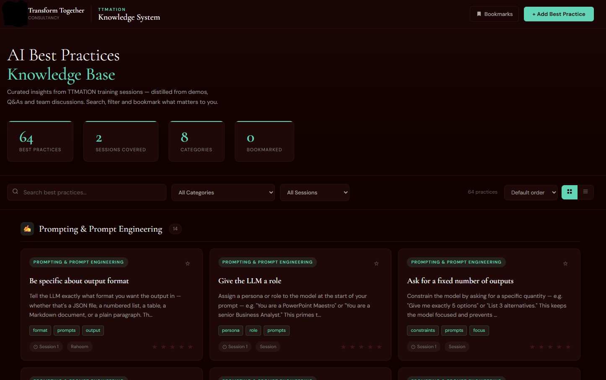
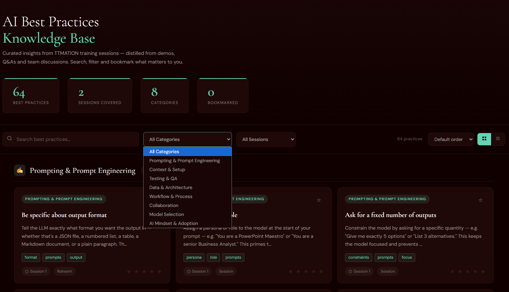
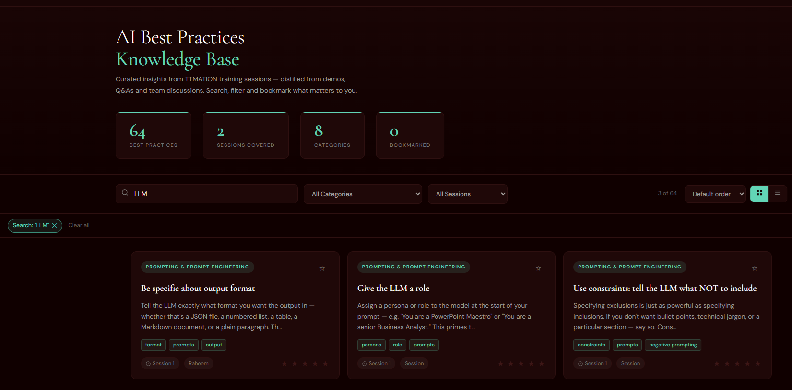
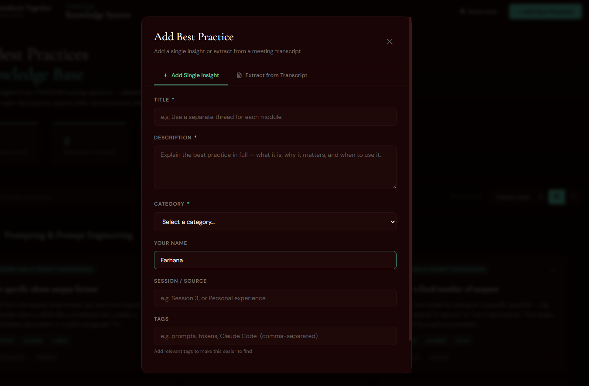
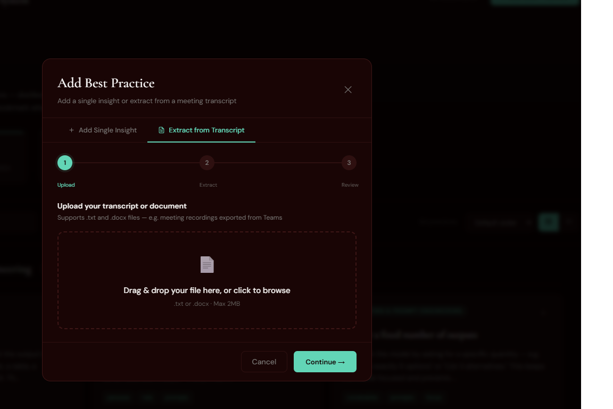
I designed and run an internal AI upskilling programme at Transform Together — training sessions, demos, and team-led sharing of how we're each using AI in delivery. All that knowledge was being shared verbally and then lost. There was no structured way to capture it, search it, or build on it over time.
Transformed a series of training sessions into a living, growing team knowledge asset. Colleagues self-serve answers on how to apply AI in client contexts. The programme and tool together accelerate team AI capability — and demonstrate what responsible, practical AI adoption looks like in a consulting environment.
Currently building: a requirements prioritisation tool (MoSCoW / RICE scoring) and an interactive stakeholder mapping canvas. Both follow the same design principle — reduce manual BA effort so more time is spent with clients, not creating documents.